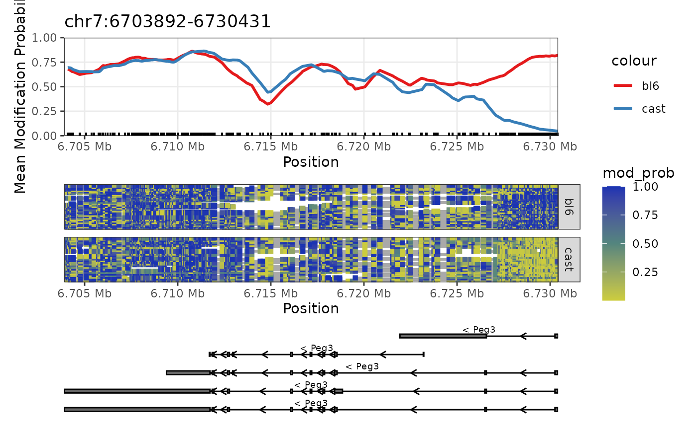

Plot the methylation of a genomic region.
Usage
plot_region(x, chr, start, end, ...)
# S4 method for class 'NanoMethResult,character,numeric,numeric'
plot_region(
x,
chr,
start,
end,
anno_regions = NULL,
binary_threshold = NULL,
avg_method = c("mean", "median"),
spaghetti = FALSE,
heatmap = TRUE,
heatmap_subsample = 50,
smoothing_window = 2000,
gene_anno = TRUE,
window_prop = 0,
palette = ggplot2::scale_colour_brewer(palette = "Set1"),
line_size = 1,
mod_scale = c(0, 1),
span = NULL
)
# S4 method for class 'ModBamResult,character,numeric,numeric'
plot_region(
x,
chr,
start,
end,
anno_regions = NULL,
binary_threshold = NULL,
avg_method = c("mean", "median"),
spaghetti = FALSE,
heatmap = TRUE,
heatmap_subsample = 50,
smoothing_window = 2000,
gene_anno = TRUE,
window_prop = 0,
palette = ggplot2::scale_colour_brewer(palette = "Set1"),
line_size = 1,
mod_scale = c(0, 1),
span = NULL
)
# S4 method for class 'NanoMethResult,factor,numeric,numeric'
plot_region(
x,
chr,
start,
end,
anno_regions = NULL,
binary_threshold = NULL,
avg_method = c("mean", "median"),
spaghetti = FALSE,
heatmap = TRUE,
heatmap_subsample = 50,
smoothing_window = 2000,
gene_anno = TRUE,
window_prop = 0,
palette = ggplot2::scale_colour_brewer(palette = "Set1"),
line_size = 1,
mod_scale = c(0, 1),
span = NULL
)
# S4 method for class 'ModBamResult,factor,numeric,numeric'
plot_region(
x,
chr,
start,
end,
anno_regions = NULL,
binary_threshold = NULL,
avg_method = c("mean", "median"),
spaghetti = FALSE,
heatmap = TRUE,
heatmap_subsample = 50,
smoothing_window = 2000,
gene_anno = TRUE,
window_prop = 0,
palette = ggplot2::scale_colour_brewer(palette = "Set1"),
line_size = 1,
mod_scale = c(0, 1),
span = NULL
)Arguments
- x
the NanoMethResult or ModBamResult object.
- chr
the chromosome to plot.
- start
the start of the plotting region.
- end
the end of the plotting region.
- ...
additional arguments.
- anno_regions
the data.frame of regions to be annotated.
- binary_threshold
the modification probability such that calls with modification probability above the threshold are set to 1 and probabilities equal to or below the threshold are set to 0.
- avg_method
the average method for pre-smoothing at each genomic position. Data is pre-smoothed at each genomic position before the smoothed aggregate line is generated for performance reasons. The default is "mean" which corresponds to the average methylation fraction. The alternative "median" option is closer to an average within the more common methylation state.
- spaghetti
whether or not individual reads should be shown.
- heatmap
whether or not read-methylation heatmap should be shown.
- heatmap_subsample
how many packed rows of reads to subsample to.
- smoothing_window
the window size for smoothing the trend line.
- gene_anno
whether to show gene annotation.
- window_prop
the size of flanking region to plot. Can be a vector of two values for left and right window size. Values indicate proportion of gene length.
- palette
the ggplot colour palette used for groups.
- line_size
the size of the lines.
- mod_scale
the scale range for modification probabilities. Default c(0, 1), set to "auto" for automatic limits.
- span
DEPRECATED, use smoothing_window instead. Will be removed in next version.
Details
This function plots the methylation data for a given region. The main trendline plot shows the average methylation probability across the region. The heatmap plot shows the methylation probability for each read across the region. The gene annotation plot shows the exons of the region. In the heatmap, each row represents one or more non-overlapping reads where the coloured segments represent the methylation probability at each position. Data along a read is connected by a grey line. The gene annotation plot shows the isoforms and exons of genes within the region, with arrows indicating the direction of transcription.
Since V3.0.0 NanoMethViz has changed the smoothing strategy from a loess smoothing to a weighted moving average. This is because the loess smoothing was too computationally expensive for large datasets and had a span parameter that was difficult to tune. The new smoothing strategy is controlled by the smoothing_window argument.
Examples
nmr <- load_example_nanomethresult()
plot_region(nmr, "chr7", 6703892, 6730431)
